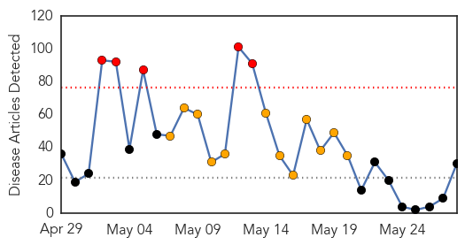
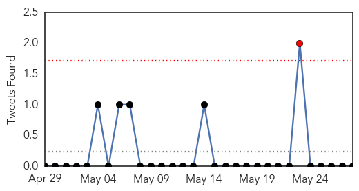
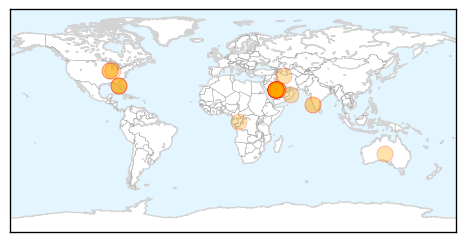
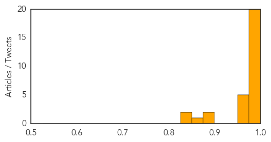

Toggle navigation
Early Warning
Daily Alerts
Middle East Respiratory Syndrome
May 28, 2014
Compare to:
-
Dengue Fever
Hemmorhagic Fever
Mold/Fungal Infection
Influenza
Meningitis
Pertussis / Whooping Cough
Cholera
Hepatitis
Chikungunya
Yellow Fever
Bubonic Plague
West Nile Virus
Swine Flu
Ebola
Measles
Unknown
Mumps
30 Day Trends
Web: 5
alerts
, 12
warnings
Twitter: 1
alerts
, 0
warnings
Top Articles:
0.999
Middle East respiratory syndrome coronavirus (MERS-CoV) – update
0.999
MERSWatch: 3rd U.S. 'Case' Was False Positive
0.999
3rd Case of MERS in US Was False Alarm, CDC Says
0.999
Illinois man didn’t have MERS, CDC says
0.998
Deadly virus MERS arrives in Iran with 2 cases reported
0.998
Iran reports first 2 MERS cases
0.998
CDC concludes Indiana MERS patient did not spread virus to Illinois business associate
0.998
CDC: Illinois man didn't have MERS
0.997
CDC says man who met with U.S. MERS patient was not infected after all
0.997
Hoosier businessman didn’t spread MERS after all
0.997
Iran reports first MERS cases weeks before Ramadan
0.997
Secondary US MERS case ruled out; Saudi count grows
0.996
Officials take back report of MERS spread in US
0.996
Nevermind! It Turns Out the Guy Who Tested Positive for MERS Doesn'..
0.994
A definitive blood test indicates Illinois resident was not infected with MERS-CoV
0.994
Iran Reports First Cases of Deadly Virus
0.994
Illinois MERS patient misdiagnosed, was not infected with virus, CDC finds
0.992
CDC: Meeting Did Not Spread MERS
0.987
Coronavirus alert: Screening centre set up at Ahmedabad airport
0.985
Iran Reports Its First Cases Of MERS Virus
0.969
Iran reports its first 2 cases of MERS virus
0.968
Iran reports its first 2 cases of MERS virus
0.965
Pace of MERS infections in Saudi slows
0.954
Three H1N1 deaths in May, no MERS cases, says Oman
0.953
Iran confirms first two cases of Mers
0.899
MERS snuffs out 6 more lives
0.888
20 new HIV cases reported in Negros
0.866
Indiana farm confirms re-infection by deadly pig virus
0.825
Mangalore may have MERS case
0.825
Mangalore may have MERS case
Top Tweets:
No tweets found for May 28, 2014
Web/News Articles

Tweets

Article Locations

Article Confidences
